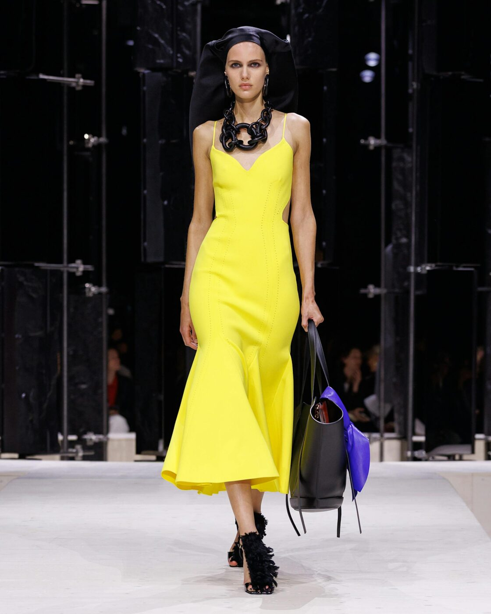

Sarah Burton set her third Givenchy collection inside the spinning drum of a zoetrope. The clothes came out of Northern European painting, deep and lit from within. The house stood and applauded.
The show opened in near dark. Burton built the Paris runway as a zoetrope, the old spinning drum that turns still pictures into motion. A winding path kept each model hidden until she reached the front. Every exit arrived as a small reveal.
This was Burton's third womenswear collection for Givenchy. The first two set out her grammar of cut, tailoring and silhouette. Here she turned that grammar around and let it loosen. The precision held. The drape did the rest.
Burton has spoken about putting a person back together in an unsettled world, and the collection read that way, assembled from pieces that each carried a past. The cast was broad, a run of women rather than a single type. The mood sat between armour and ease.
The palette
Colour came out of the galleries. Burton pulled from Velazquez and the Dutch Golden Age, the deep tonal blacks and the jewel notes that sit inside old portraits. Velvety black anchored the room. Ultramarine, garnet, emerald and burnished gold moved through it.
Sapphire blue carried the most charge. It ran across velvet dresses, fuzzy shoes, long coats and leather bags. Lemon yellow answered it, worked into maxi and midi dresses, bow-trimmed heels and leather gloves. Against the blacks and greys, both colours read like light through varnish.
The staging worked on the colour. In the low light of the drum, saturated cloth glowed while matte black fell away to shadow, so a single look could hold both depth and shine at once. Burton has said she wanted women to project their own identity, and the installation handed each one a spotlight as she came round the bend. The effect landed closer to a portrait gallery than a catwalk.

Courtesy of Givenchy — Fall-Winter 2026, Paris
The hand
Burton opened the fabric range wide. Menswear wools met velvet, kimono silk, lace, silver bullion and furred textures. Duchesse satin appeared as a heavy cape, drawn into a single fall of cloth. Evening dresses looked shredded and scattered with flowers, worn under headdresses shaped by Stephen Jones.
Tailoring stayed sharp. Short double-breasted peplum jackets sat over slim trousers. Broad-shouldered blazers came belted, styled with pleated pants. The new Shark Lock boot rose to the thigh, its hardware crossing the front, the heel hidden inside.
Accessories did quiet work. Silver bullion caught the light at collars and cuffs. Fur read as trim rather than statement, a line at a hem or across a shoulder. Leather bags held the strong blues and yellows, carrying the colour story down to the smallest piece.
Burton dresses the woman who walks in first and decides what the room will be.
The Splendid EditThe lineage
Burton keeps returning to the archive, the house one and her own. She brought back leopard, including the black leopard lace Lee Alexander McQueen used in 1997, softened now into bias-cut dresses threaded with ribbon. A yellow jacquard came out of a Givenchy collection McQueen once made. The references were personal rather than decorative.
She also drew on her arrival in Paris. A decaying kimono she bought when she moved to the city in 2024 fed the silk pieces. One jewelled top reprised the design that travelled when Jenna Ortega wore it to the 2025 Emmys. The past kept surfacing without weighing the clothes down.
Craft ran through the whole cast. Embroidery and layered lace showed the hours in each piece without shouting about it. Burton treats the atelier as a collaborator, and the clothes moved between the studio and the woman they were cut for. That exchange has been the thread across her three seasons.
The house
Hubert de Givenchy founded the house in 1952 and built it on line and proportion, the clean shoulder and the sculpted waist. Audrey Hepburn made his name shorthand for a certain Paris polish. The label has since passed through Galliano, McQueen, Tisci, Waight Keller and Williams before Burton arrived in 2024 from Alexander McQueen.
Burton knows this territory. She ran Alexander McQueen for more than a decade after Lee McQueen's death, and she understands a house built on a founder's silhouette. At Givenchy she reads Hubert's sense of structure and lets women wear it on their own terms. The clothes ask to be lived in, not preserved.
The collection framed one idea. A woman puts herself together and steps out into the day. That reading gave the tailoring its purpose and the colour its charge. Nothing on the runway strained for a headline.
The Splendid Edit on Givenchy's Fall-Winter 2026 collection by Sarah Burton, shown in Paris. Details from Givenchy and LVMH.
Photography courtesy of Givenchy — Fall-Winter 2026, Paris